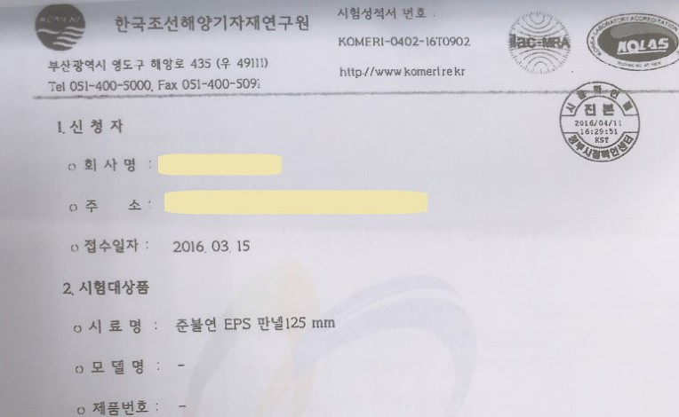

경상남도, 건축자재 시험성적서 위·변조 등 법령 위반사항 강력대응
- 대형화재의 재발 방지를 위해 건축공사장 등 안전감찰 실시
- 7개 시군, 43개 공사장에서 건축자재 품질관리 소홀 등 186건 적발
경상남도는 올해 3월 11일부터 지난 5월 14일까지 65일간 창원, 진주, 사천, 양산, 함안, 창녕, 고성 등 7개 시·군을 대상으로 ‘건축공사장 품질 및 안전관리실태’에 대한 안전감찰을 실시하여 43개 건축공사장에서 186건의 위반사항을 적발하였다.
이번에 실시한 안전감찰은 최근 제천 스포츠센터, 밀양 세종병원 등 수많은 생명을 앗아간 대형화재의 재발방지를 위해 행정안전부(안전감찰담당관실)와 협업하여 실시하였다.
감찰활동은 건축자재 품질관리 및 인·허가 실태, 건축공사장 안전관리실태, 건축시공·감독실태 등 건축공사장 안전사고 발생과 향후 화재발생시 피해를 최소화 할 수 있도록 예방감찰 위주로 진행하였다.
이번에 적발된 주요 위반사례를 살펴보면 다음과 같다.
<건축자재 품질관리> OO시 ◇◇건축공사장에서 준불연 EPS판넬 시험성적서의 자재두께 75mm를 125mm로 위·변조하였고, OO군 ◇◇건축공사장에서는 단열재 시험성적서의 자재두께 50mm를 125mm와 225mm로 위·변조하여 사용하는 등 화재 등 재해 발생 시 건축자재가 갖추어야 할 성능을 증명하는 시험성적서를 위·변조하는 사례가 적발되었다.

<건축 인·허가> 건축마감자재 중 복합자재는 품질관리서 제출이 의무화되었음에도 대부분의 시·군에서 제출여부를 확인하지 않고 있었으며,「건축법」에서 (특별)피난계단은 *돌음계단으로 설치하지 않도록 규정하고 있음에도 OO시 ◇◇공동주택은 돌음계단으로 설계하여 인·허가 및 시공되었다.
또한, OO시 ◇◇공동주택 현장은 세대별 대피공간 내 실외기를 설치하면서 준불연재로 별도 구획하지 않고 대피공간면적이 부족하여 화재발생 시 인명피해가 우려됨에도 주택사업계획을 승인하는 등 인·허가 업무처리에 미흡한 점이 있었다.
*돌음계단 : 계단의 폭이 일정하지 아니하고, 이동축이 직각 방향이 아니거나 계단참 없이 계단으로만 이루어진 구조로 (특별)피난계단에 시공 시 화재 등 돌발적인 재난 상황에서 신속한 피난을 어렵게 함 |
<건축공사장 안전관리> OO시 ◇◇건축공사장에서는 지하 터파기 흙막이 가시설 공사에서 안전관리계획서와 달리 볼트를 누락시공하고, 용접 길이를 부족하게 시공하였으며, 흙막이 엄지말뚝을 미시공 하였다.
OO군 ◇◇건축공사장에서는 근로자 추락 위험이 있음에도 낙하물방지망을 설치하지 않았으며, OO시 ◇◇건축공사장은 가연성 및 인화성 물질을 방치하고, 지하층에서 화재위험작업을 하면서 화재감시자를 미 배치하였으며, 추락위험이 있는 계단부에 안전난간을 설치하지 않는 등 다수의 위법사항을 적발하였다.
<건축물 화재성능> OO시 ◇◇건축공사장은 관통배관 틈과 방화문틀 등에 내화성능이 확인되지 않은 충전재(우레탄폼 등)를 시공하여 화재확산 방지를 어렵게 하였다.
OO시 ◇◇건축공사장은 도면과 다르게 방화문 개폐방향을 피난 반대방향으로 설치하였고, 출입문을 하향식 피난구 방향으로 열리도록 시공하여 화재발생 시 신속한 피난을 어렵게 하였다.
OO군 ◇◇공동주택은 아파트 대피공간에 차열 성능이 없는 방화문을 시공하였다.
경남도는 이번 감찰결과, 전반적으로 건축공사장 유해·위험 예방조치가 미흡하고, 건축자재 품질관리 소홀로 화재 등 재난발생 시 인명피해 발생이 우려됨에 따라 금회 적발된 위법사항 중 28개 현장 49건에 대해서는 재시공토록 하였다.
또한, 위법한 11개사에 대하여 고발 또는 수사의뢰하고, 14개 업체에 과태료 1,045만원을 부과하도록 하였으며, 인·허가 업무 등을 소홀히 한 관계공무원 50명에 대하여는 행정처분을 요구하였다.
신대호 경상남도 재난안전건설본부장은 "안전무시 관행, 안전불감증 등 반복되고 있는 고질적인 안전문제들이 금회 안전감찰에서도 여실히 드러남에 따라 매년 안전감찰테마로 정례화하여 관계자들이 스스로 안전예방활동에 적극 참여할 수 있도록 지속적으로 안전감찰을 실시하겠다"고 밝혔다.
 190603(보도자료)건축공사장품질및안전관리실태감찰.hwp
190603(보도자료)건축공사장품질및안전관리실태감찰.hwp